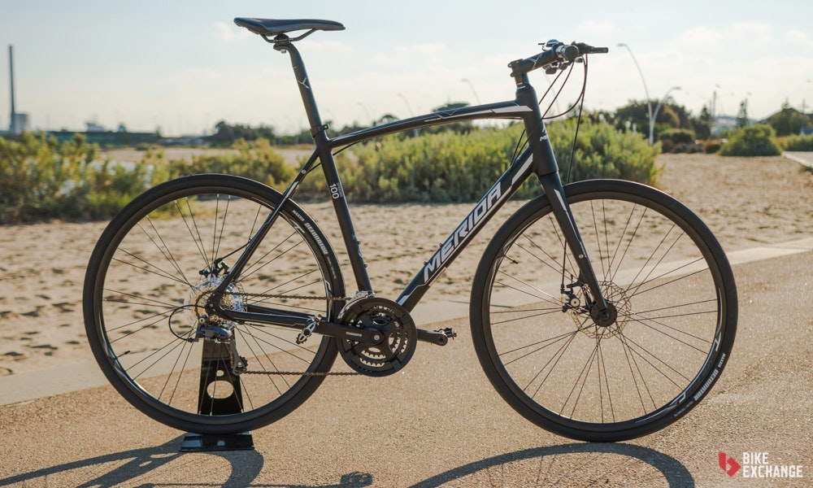
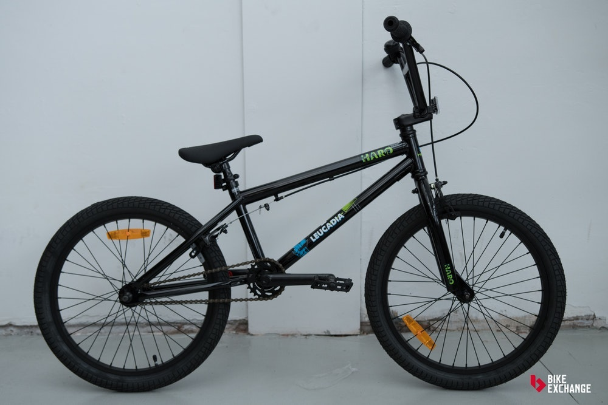

Bicicletas de Ruta

Están diseñadas para montar en carreteras y terrenos planos, las bicicletas de ruta se encuentran entre las más eficientes en el mundo del ciclismo, y puedes identificarlas por sus ruedas delgadas y su manubrio que se curvea hacia abajo y de vuelta hacia ti.tando un nuevo auge y su uso crece considerablemente en todo el mundo debido al alto precio del combustible, pues la bicicleta resulta muy ecológica y económica.
leer mas
Bicicletas de Triatlón y Contrarreloj

Las bicicletas de Triatlón/contrarreloj están diseñadas con las competencias más exigentes en mente, no te servirán mucho para motivos recreacionales. Se enfocan en la aerodinámica, lo cual las hace más rápidas que las bicicletas de ruta, si compites en línea recta, buscando batir un tiempo récord. Estas ventajas en la velocidad se ven balanceadas sacrificando tu control y comodidad después usos prolongados.
Bicicletas para Ruta de Barra Plana

Las bicicletas de barra plana combinan el manubrio recto del ciclomontañismo, con la velocidad de una bicicleta de ruta. Al ser más erguidas a la hora de montar, no son tan rápidas como las de ruta tradicionales, pero ofrecen una posición más ergonómica y mayor visibilidad hacia el tráfico.
Bicicletas de Ciclomontañismo o MTB

Podemos decir con seguridad que no hay una categoría del ciclismo con tantas opciones como las bicicletas de montaña/MTB. Esto puede ser bueno, pero fácilmente se vuelve confuso al estar bombardeado con tantas alternativas.
Bicicletas de Cyclocross

Hechas para competir en el deporte con el que comparten nombre. Sus primeras competencias se realizaron en Europa, eran la manera en que los ciclistas de ruta se mantenían en forma durante el invierno, sin embargo, hoy en día esta modalidad se esparció por todo el mundo y tiene millones de fanáticos por mérito propio.
Bicicletas Híbridas

Seguro las conoces como bicicletas de confort o "fitness", las híbridas normalmente ofrecen la posición de montar más erguida.
Su nombre se debe a que nacieron como el balance entre las bicicletas de ruta y las de montaña, pero hoy en día se podrían describir mejor en la categoría de bicicletas recreacionales que se usan para mantenerse en forma.
Bicicletas Urbanas

Esta categoría es difícil de describir, ya que cubre todo tipo de bicicletas que sean diseñadas para el ambiente urbano y el transporte del día a día. Comúnmente se crean con el transporte eficiente en mente, para distancias cortas o medianas.
Bicicletas de BMX

Las bicicletas de bicicross tienen un solo objetivo, la diversión.
Lo que más las destaca son sus ruedas pequeñas, de 20 pulgadas, sus marcos compactos y un único cambio, lo que buscan es reducir el pedaleo a lo mínimo, y usarse en distancias cortas y ambientes cerrados.